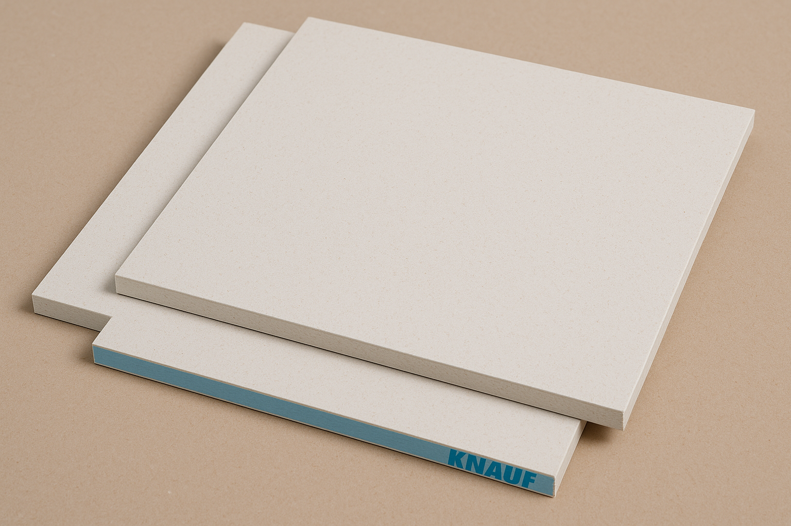

Bandažiranje knauf plošč je izjemno pomemben postopek pri vseh zaključnih gradbenih delih, kjer se uporabljajo mavčnokartonske plošče (pogovorno imenovane knauf plošče). Gre za ključen korak pri oblikovanju notranjih sten in stropov, ki ne le izboljša končni videz prostora, temveč bistveno vpliva tudi na funkcionalnost in trajnost končne obdelave. Postopek bandažiranja vključuje natančno zapolnjevanje vseh spojev med posameznimi knauf ploščami ter prekrivanje mest, kjer so plošče mehansko pritrjene na podkonstrukcijo – običajno z vijaki. V te spoje se vgradi posebna bandažna mrežica ali papirni trak, ki preprečuje nastanek razpok in zagotavlja, da bo površina ostala stabilna tudi ob morebitnih manjših premikih konstrukcije. Sledi več nanosov izravnalne mase, ki se po vsakem sloju fino obrusijo, dokler površina ni popolnoma gladka, enakomerna in vizualno neprekinjena. Le tako pripravljena podlaga je primerna za nadaljnje dekorativne postopke, kot so: pleskanje, glajenje z različnimi tehnikami, polaganje tapet, ali nanašanje posebnih strukturiranih premazov in dekorativnih ometov. Kakovostno izvedeno bandažiranje je pogosto tisto, kar loči profesionalno izvedbo od površne. Napačna ali slabo pripravljena podlaga lahko namreč hitro pripelje do razpok, videnja stikov ali luščenja zaključnih slojev. Zato tej storitvi posvečamo posebno pozornost, saj verjamemo, da vsak dober rezultat temelji na brezhibni pripravi. Z več kot 30-letnimi izkušnjami in natančnostjo pri detajlih zagotavljamo, da je vsaka površina po bandažiranju popolnoma pripravljena za nadaljnje slikopleskarske posege – vizualno dovršena, tehnično pravilna in dolgotrajno obstojna.
BANDAŽIRANJE KNAUF PLOŠČ
